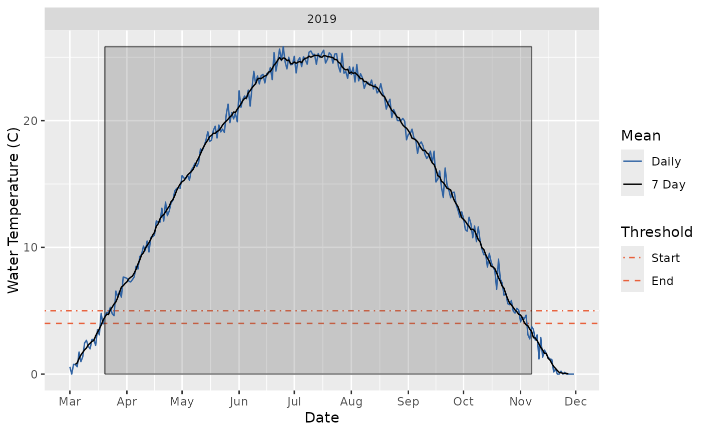

Plots the growing seasons in a year.
Arguments
- x
A data frame with two columns
dateandtemperature.date, which must be of class Date provides the dates andtemperaturewhich must be a numeric vector provides the mean daily water temperature in degrees centigrade.- start_date
A Date scalar of the first date within each year to consider (the year is ignored). #' If
start_dateoccurs before theend_date(when ignoring the year) then the window is considered to span two calendar years.- end_date
A Date scalar of the last date within each year to consider (the year is ignored).
- min_length
A whole number of the minimum length to consider. Must be at least twice the window width but no more than 365. If NULL then set to be the difference between
start_dateandend_date(ignoring the year).- ignore_truncation
A flag specifying whether to ignore truncation of the mean daily water temperature vector or a string of "start", "end", "none" (equivalent to FALSE) or "both" (equivalent to TRUE) specifying which type of truncation to ignore.
- start_temp
A positive real number of the average water temperature at the start of the growing season(s) in C.
- end_temp
A positive real number of the average water temperature at the end of the growing season(s) in C. It must be greater than or equal to the start temperature.
- window_width
A positive whole number of the width of the rolling mean window in days. By default 7.
- pick
A string specifying whether to pick the "longest", "shortest", "first" or "last" 'season' or the season with the "biggest" or "smallest" GSDD. By default the returned value is the the GSDD value for the "longest" 'season'.
- latex
A flag specifying whether to use LaTeX to include degree symbol in y-axis label.
- nrow
A count of the number of rows to facet by.
- ncol
A count of the number of columns to facet by.
- msgs
A flag specifying whether to provide messages.
Examples
gss_plot(gsdd::temperature_data)
